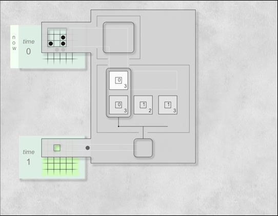

dispGol - explanation of the animation
Here's an explanation of what the animation is showing. We'll start with a brief account of Conway's Game of Life (GoL). Even if you're already familiar with GoL, understanding the way the GoL rules are described here will be helpful for understanding what the animation does.
A brief description of Conway's Game of Life
Conway's Game of Life is a well known cellular automaton.
A GoL universe is an infinite two-dimensional grid of cells, each of which is either empty or contains an atom.
The state of the universe is updated at each moment to determine whether cells in the next moment will be empty or will contain an atom. The next state of each cell is calculated by looking at its current state as well as the state of its eight neighbours (the eight cells surrounding it). The following rules are used:
- If a cell is empty and has exactly three neighbours containing atoms, then in the next state it will contain an atom
- If a cell contains an atom and two of its neighbours contain atoms, then in the next state it will contain an atom
- If a cell contains an atom and three of its neighbours contain atoms, then in the next state it will contain an atom
- In all other cases, then in the next state the cell will be empty
(note that the rules are typically described in a slightly different fashion. See for example the description in Wikipedia. However, these differences are only surface ones, and the description given here is functionally exactly the same as the more conventional descriptions.)
The next state of the universe is calculated according to these rules. Then the rules are applied to that state to calculate the one following it, and so on.
Despite the simplicity of these rules, a GoL universe can contain complex and sophisticated dynamically-evolving patterns, including patterns implementing any possible computation.
One well-known GoL pattern is the Glider, which moves across the board in a diagonal direction.

The above animation represents a typical view of GoL patterns. We see the succession of universe states. But we don't see the details of how these states are calculated.
The purpose of the dispGoL animations is to show those calculations in a highly visual manner.
An explantion of what's happening in the animation
The top and bottom grids and the updater
The animation shows the evolution of a GoL pattern over a number of time steps, but unlike the other GoL animations it shows how each subsequent pattern is calculated from the last.
The display contains three main components.
The top grid is at the top left and shows the pattern's state in the current moment.
The updater starts off to the right and represents a machine that calculates the next pattern from the current pattern according to the GoL rules.
The bottom grid is at the bottom left and shows what the pattern will be in the next moment. When the updater finds a cell in the top grid that should contain an atom in the next moment it will place an atom in that position in the bottom grid.
After the updater has finished processing the top grid and putting atoms on the bottom grid, the time in the GoL universe moves forwards one time step.
To represent this, both the grids scroll up, with the top grid scrolling out of view off the top of the diagram, the bottom grid scrolling up to where the top grid was and a new grid scrolling into view from the bottom of the screen to become the new bottom grid.
And then the process can start over again to calculate the next state.
The components of the updater
The updater consists of a number of components.
The top arm reads in input from the top grid and passes it onto the count component. The top arm has a hole in it that is centered over the current cell on the grid. This hole is large enough to fit in that cell and its eight neighbours. It is like this because the GoL rules are applied to a cell, looking at its contents and the contents of its eight surrounding neighbours. The top arm reads in the contents of these nine (one plus eight) cells and passes them onto the count component.
The count component counts whether there is zero or one atom in the cell being processed and the number of atoms in the surrounding eight cells. It then passes on the details of this count to the match component.
The match component determines whether the current cell should contain an atom in the next moment. Recall that (in how we've described them) there are four GoL rules
- If a cell is empty and has exactly three neighbours containing atoms, then in the next state it will contain an atom
- If a cell contains an atom and two of its neighbours contain atoms, then in the next state it will contain an atom
- If a cell contains an atom and three of its neighbours contain atoms, then in the next state it will contain an atom
- In all other cases, then in the next state the cell will be empty
The match component contains representations of the first three conditions and it checks the information from the count component against each one of those. If there's a match it sends a signal to the new atom pen to put an atom on the bottom grid. If there's no match it does nothing (thus implementing the fourth rule).
The new atom pen holds a new atom ready for putting it in the current position on the bottom grid. It will release that atom if it gets a match signal from the match component.
The bottom arm sits over the bottom grid, and has a hole in it that will sit over the current cell. The cell this hole sits over corresponds to cell the top arm's hole is centered over. This is because the updater is trying to calculate whether the current cell should contain an atom in the next moment. When the new atom is released by the new atom pen it moves out over the bottom arm to that hole, which it then slots through so it can fall into the current position on the bottom grid.
Updater positioned over first grid cell
The updater processes the top grid one cell at a time, starting at the top left of the grid and moving through it row by row.
In the above diagram we can see the updater at its initial position over the grid. The current cell is the one at the center of the top arm's hole.
Update square moves from grid to count component
The top arm gets a copy of the current 3x3 square under its hole, and sends it on to the count component. This 3x3 square sent to the count component, and from there to the match component, is called the update square.
Update square in count component
In the above diagram we can see the update square in the count component, ready for the count component to process it.
Number of atoms in update square are counted
The count component counts whether there is zero or one atom in the central cell of the update square, and counts the number of atoms in the neighbouring cells surrounding the central cell.
As can be seen in the diagram, it replaces the atoms in the update square with those two counts.
Update square moves to match component
After counting the atoms, the count component passes the update square to the match component.
Update square counts checked against the three conditions
Being checked against the first condition
In the above diagram we can see the match component checking to see if the update square's counts match those specified in the first rule "1. If a cell is empty and has exactly three neighbours containing atoms, then in the next state it will contain an atom." We can see that while the central cell contains no atom, only one of its neighbours has an atom, so there will be no match here.
Then the match component will try checking the update square against items representing the second and third rules.
Being checked against the third condition
The above diagram shows the match component checking the update square against the third rule "3. If a cell contains an atom and three of its neighbours contain atoms, then in the next state it will contain an atom".
It won't match this either, so the updater will not output any atom and will just move one square across in the top grid and repeat the same process again.
An example of a match with the 'zero-three' condition
The above diagram shows a happening later on in the processing. In this case the update square does match the first condition (no atom in central cell, three atoms in neighbouring cells), and the update square and the first condition's outlines have been coloured green to indicate the match.
On a match, a signal is sent to put an atom in current position on bottom grid
Because there's been a match a signal (the green dot) is sent down to the new atom pen.
New atom moves from new atom pen to grid
Now that the signal has reached the new atom pen, the pen releases the new atom and it moves out towards the updater's bottom arm.
New atom is placed on bottom grid
The new atom then slots through the hole in the bottom arm and is thus placed in the current cell on the bottom grid.
Note again that this cell corresponds to the same cell position as the central cell in the top arm's hole.